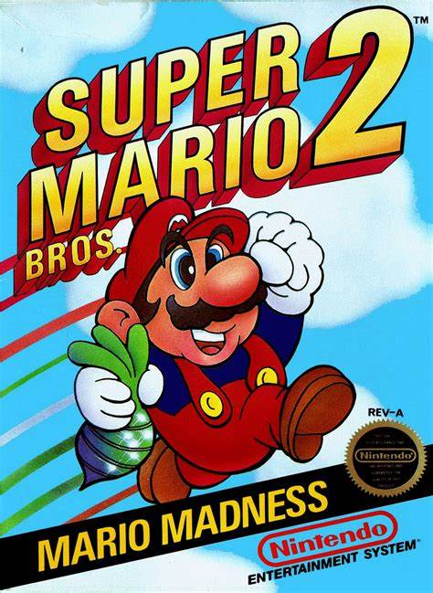

|  |
Super Mario Bros 2 |
Super Mario Bros. 2 is the second game in the Super Mario series outside Japan and the third entry overall. It is a 2D platform game originally released for the Nintendo Entertainment System in North America in 1988. It has since been re-released on many other systems, including a release on the Wii's Virtual Console in 2007, the Nintendo 3DS's Virtual Console in 2012, the Wii U's Virtual Console in 2013, and the Nintendo Switch's Nintendo Entertainment System - Nintendo Switch Online application in 2019. As a result of Japan already having a Super Mario Bros. 2 (known in English as Super Mario Bros.: The Lost Levels and Super Mario Bros. for Super Players), the game did not make its debut in the country until after the release of Super Mario World, on September 14, 1992, making it Japan's sixth installment of the series.